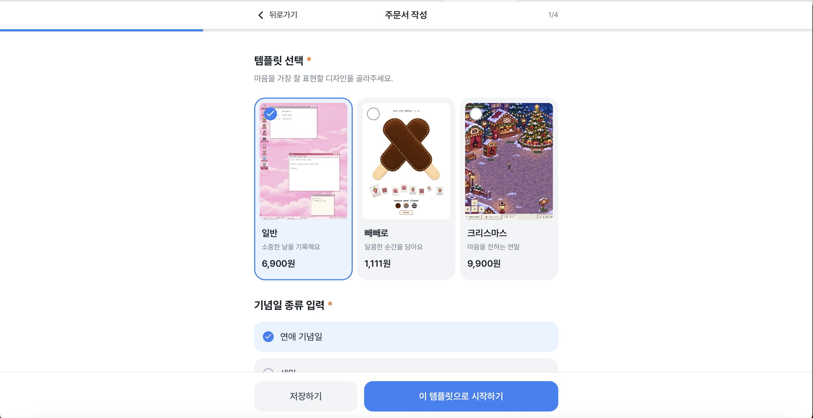
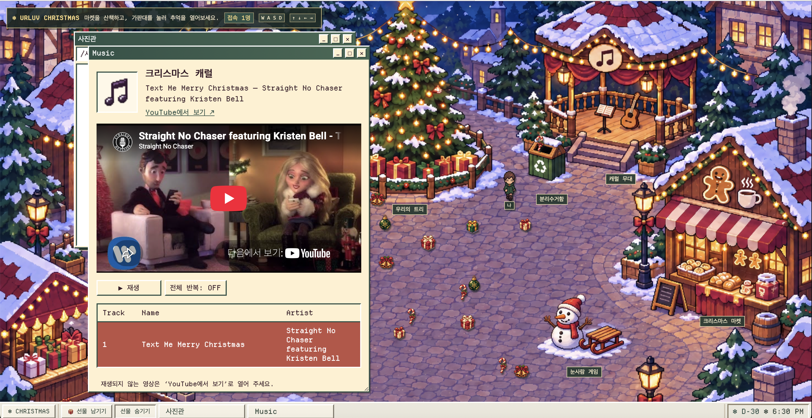
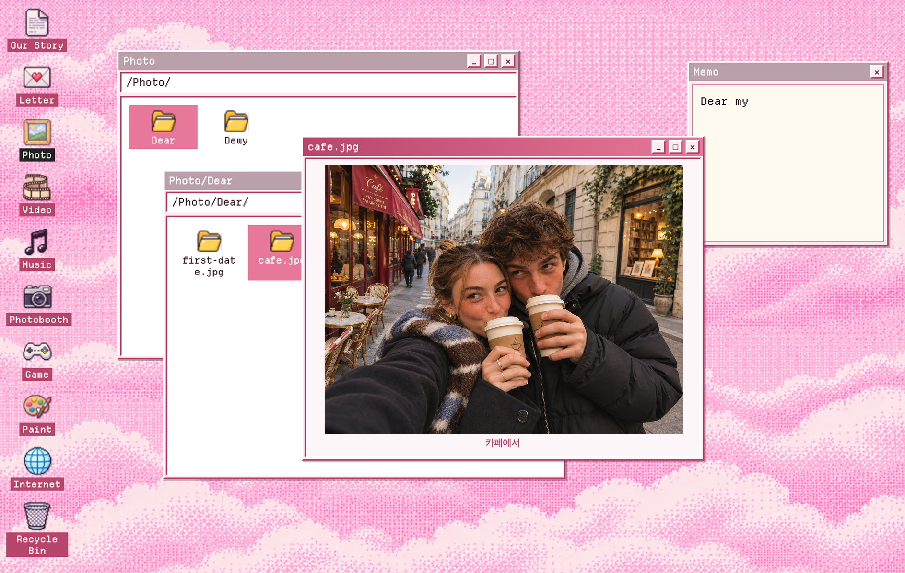
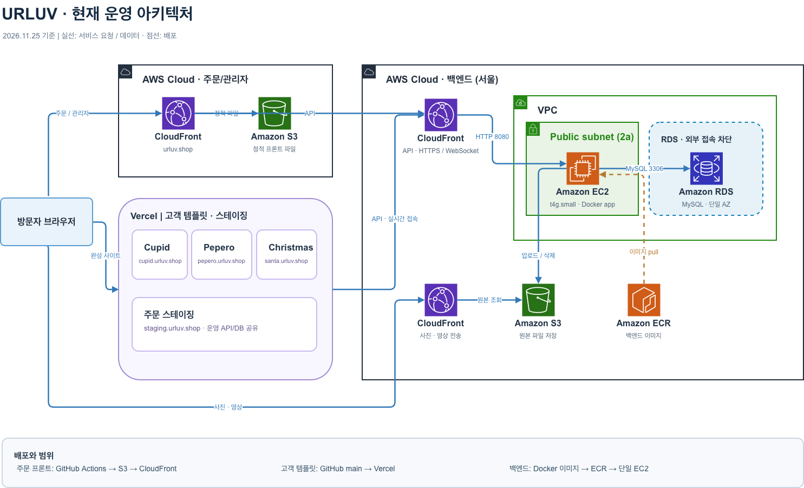
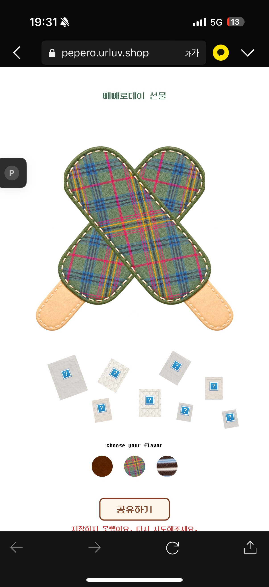
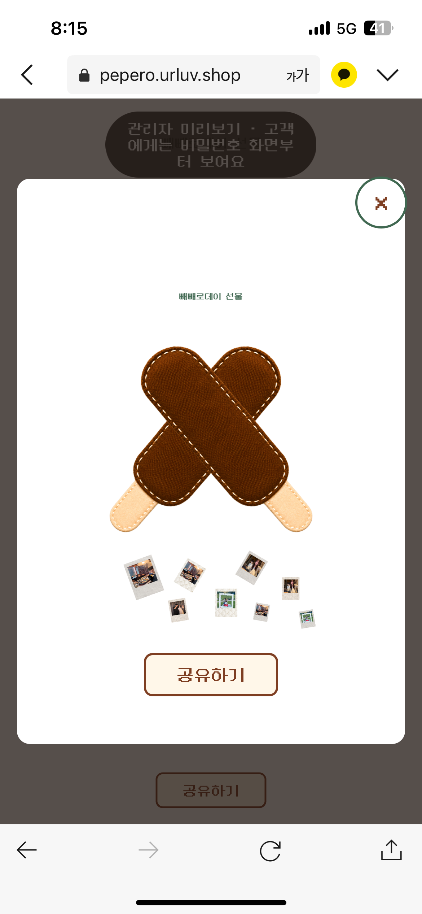
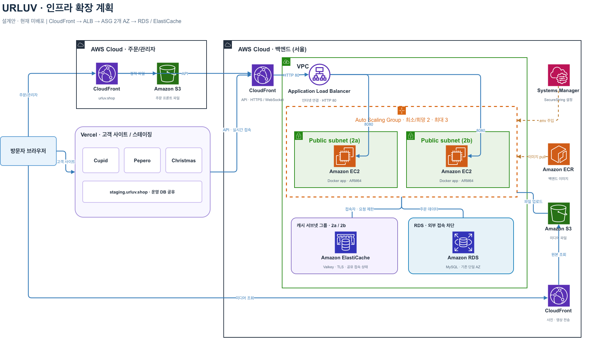

서비스 흐름
- 주문 작성템플릿을 고르고 수령일과 콘텐츠를 입력
- 입금 확인·제작운영자가 결제를 확인하고 사이트를 준비
- 사이트 전달고유 링크를 문자로 전달하고 콘텐츠를 함께 사용
URLUV는 고객이 사진, 편지, 음악을 담아 개인 기념일 사이트를 주문하는 서비스입니다. 실제 이용자의 불편을 해결하고, 주문부터 납품까지 이어지는 흐름을 운영하며 배운 것을 기록했습니다.

주문부터 사이트 전달까지의 흐름과 담당 영역을 정리했습니다.
팀은 기념일 선물이 전달되는 순간을 넘어, 연인이나 가족이 함께한 사진·영상·편지를 다시 열어보는 경험이 될 수 있을지 고민했습니다. URLUV는 이 콘텐츠를 개인별 웹사이트에 담아 링크로 전하는 방식으로 답했습니다.
11.08–11.20 발표 자료 기준 · 누적 매출 약 2.7만 원
초기 구매 고객 5명을 인터뷰해 개인화된 선물, 비대면 공유, 다시 꺼내볼 수 있는 경험을 구매 이유로 확인했습니다.
고객이 템플릿을 고르고 콘텐츠를 입력하면, 선택한 분위기의 사이트로 이어집니다.



팀이 인스타그램 홍보에 사용한 콘텐츠입니다. 템플릿별로 고르고 옆으로 넘겨볼 수 있습니다.
주문 화면, API, 데이터 저장소, 고객 사이트가 어떻게 연결되는지 요약했습니다.
주문 내용은 MySQL에, 사진과 영상은 S3에 저장합니다. 운영자는 별도 관리자 화면에서 입금과 제작 상태를 처리합니다. 현재 API 서버는 단일 EC2입니다.

주문서와 고객용 템플릿은 웹 프론트로 제공하고, 주문·관리자·기념일 사이트 API 요청은 CloudFront를 거쳐 EC2의 Spring Boot 컨테이너로 전달합니다. 주문 상태와 사이트 정보는 RDS MySQL에 저장합니다. 업로드한 사진·영상은 비공개 S3에 두고 미디어용 CloudFront로 전달합니다.
API 컨테이너 한 개를 단일 EC2에서 실행합니다. 크리스마스 마켓의 실시간 접속 상태와 요청 제한 정보도 현재는 해당 서버 메모리에 있습니다. ALB·Auto Scaling·Redis를 이용한 다중 인스턴스 구성은 아래 확장 설계에 분리해 두었습니다.
작성 중인 주문서는 초안 상태로 저장됩니다. 제출 후 주문 상태가 바뀌고, 운영자가 입금을 확인한 뒤 사이트를 전달합니다. 상태 변경과 문자 처리 이력은 관리자 기록에 남습니다.
Java · Spring Boot · JPA · MySQL · Docker · AWS EC2 · RDS · S3 · CloudFront · Vercel
확인한 사실, 원인 가설, 코드 변경, 검증 범위를 나눠 기록했습니다.
카카오톡 브라우저에서 사진 미리보기가 일부 기기에서 깨진다는 제보가 있었습니다. 같은 시간대의 CloudFront 로그에서는 뚜렷한 오류가 보이지 않았습니다.
기기별 이미지 처리 여건 차이를 원인 후보로 보고, 서버에 저장하는 사진의 긴 변을 최대 1600px로 줄였습니다. 로그 상태와 사용자 화면의 현상을 구분해 판단했습니다.
제보된 문제는 변경 후 해결됐습니다. 기기 메모리가 단일 원인이었다고 단정하지 않고, 같은 유형의 문의가 다시 생기는지 운영 중 확인합니다.
업로드 서비스가 사진을 저장하기 전에 PhotoFiles.prepare()를 호출합니다. 파일 앞부분으로 형식을 판별하고 HEIC를 JPG로 바꾼 뒤, vipsthumbnail로 긴 변을 설정값 이하로 줄입니다. 변환 실패 시 원본을 저장하고 경고 로그를 남깁니다.
photo-max-px: ${PHOTO_MAX_PX:1600}
// PhotoFiles.shrink()의 크기 제한 인자
"--size", maxPx + "x" + maxPx + ">"
// DraftMediaService.upload()
PhotoFiles.Photo p = photos.prepare(file);CloudFront 로그에서 뚜렷한 오류가 없었다는 것은 파일 요청이 실패했다는 증거가 없다는 뜻이었습니다. 화면에서는 이미지가 물음표로 보였고, 기기마다 현상이 달랐습니다. 팀은 전송 이후 브라우저가 원본 사진 여러 장을 디코딩하고 그리는 과정도 확인해야 한다고 판단했습니다. 휴대폰 원본 사진은 압축 파일 크기보다 화면에 펼쳐질 때의 메모리 사용량이 훨씬 클 수 있습니다. 다만 당시 기기 메모리를 직접 측정한 것은 아니므로 이를 확정 원인으로 적지 않았습니다.
사진 업로드 흐름에서 저장 직전에 PhotoFiles.prepare()를 거치도록 했습니다. 긴 변이 설정값보다 큰 사진은 vipsthumbnail로 최대 1600px까지 줄입니다. 회전 정보에 맞춰 이미지를 처리하고 색 정보는 유지하며, 위치 정보 등 다른 메타데이터는 제거합니다. 변환을 동시에 두 장까지만 허용해 서버 메모리 부담도 제한합니다. 도구 실행에 실패하면 업로드 자체를 중단하지 않고 원본을 저장하도록 했기 때문에, 그 경우 큰 이미지가 남을 수 있다는 한계가 있습니다.
변경 후 제보됐던 화면에서 사진이 표시되는 것을 확인했습니다. 아래 전후 화면은 기기와 촬영 시점이 달라 엄밀한 성능 비교 자료는 아닙니다. 이 사례의 결론은 ‘이미지 크기 제한 후 사용자에게 보고된 표시 문제가 해결됐다’는 것이고, 카카오톡 브라우저의 내부 실패 원인을 단정한 것은 아닙니다.


입금 확인과 납품 상태를 여러 운영자가 다루면, 오래된 화면에서 보낸 요청이 최신 상태를 덮어쓸 수 있습니다.
주문 버전을 요청에 함께 보내도록 했습니다. 그사이 주문이 바뀌었다면 서버가 409 충돌을 반환하고 최신 내용을 다시 읽게 합니다.
두 운영자가 같은 버전을 본 상황을 순차 요청으로 재현한 통합 테스트에서 첫 요청은 성공하고 두 번째 요청은 ORDER_CONFLICT로 거절됩니다. 실제 동시 요청 부하 테스트나 운영 장애 해결 사례로 제시하지는 않습니다.
주문 엔티티의 @Version으로 변경 때마다 버전을 올립니다. 관리자 화면은 마지막으로 본 버전을 expectedVersion으로 전송합니다. 서버는 처리 전에 비교하고, 충돌하면 화면이 주문 상세를 다시 조회합니다. 문자·기록보다 주문 업데이트를 먼저 반영하도록 순서도 정리했습니다.
@Version private long version;
if (o.getVersion() != expectedVersion)
throw new ApiException(ErrorCode.ORDER_CONFLICT);
o.confirmPayment(now);
orders.saveAndFlush(o);
notifications.record(o, Notification.Type.PAID, paidMessage(o));운영자 A와 B가 같은 주문 상세를 열면 둘 다 같은 상태를 보게 됩니다. A가 입금을 확인한 직후 B가 이전 화면에서 취소 또는 납품을 처리하면, B의 요청은 이미 바뀐 주문을 기준으로 판단해야 합니다. 화면에서 버튼을 비활성화하는 것만으로는 다른 브라우저의 변경을 알 수 없으므로, 서버와 데이터베이스에서 충돌을 판정하도록 설계했습니다.
Order의 @Version 값과 관리자 화면이 전달한 expectedVersion을 먼저 비교합니다. 화면이 오래된 경우 ORDER_CONFLICT를 반환합니다. 거의 같은 순간에 요청이 도착해 서비스의 사전 비교를 모두 통과하더라도, JPA 낙관적 락과 동시성 예외 처리로 한쪽 변경을 거절하도록 했습니다. 프론트엔드는 충돌 응답을 받으면 진행 중인 동작을 닫고 주문 상세를 다시 불러옵니다.
입금 확인에서는 주문 상태를 바꾼 뒤 saveAndFlush()로 주문 행의 업데이트를 먼저 실행하고, 그다음 안내 문자와 감사 기록을 저장합니다. 코드에는 문자·기록 행이 주문을 참조하면서 잠금 순서가 엇갈릴 수 있다는 이유가 남아 있습니다. 통합 테스트는 동일한 구버전을 가진 두 요청을 순서대로 보내 두 번째가 409로 거절되고 첫 번째 상태가 유지되는지 확인합니다. 실제 동시 부하에서 데드락 발생률을 측정한 결과는 아직 없으므로, 이 사례는 예방 설계와 테스트된 동작으로 소개합니다.
이미지 배포부터 준비 상태 확인, 실제 사용자 화면의 문제 조사까지 운영 흐름을 기록했습니다.
컨테이너 재시작 직후에는 준비 상태가 아닐 수 있어, readiness 엔드포인트가 정상 응답하는지 확인합니다.
CloudFront 기록과 애플리케이션 로그, 실제 브라우저 현상을 함께 봅니다. 로그에 오류가 없다는 이유만으로 사용자 불편을 배제하지 않습니다.
서버가 한 대인 현재 구조에서는 재시작·교체 시 중단 가능성이 있습니다. 이 위험을 바탕으로 다중 인스턴스 구성을 설계했습니다.
백엔드 이미지를 ARM64로 빌드해 Amazon ECR에 올린 뒤, 운영 EC2에서 새 이미지를 받아 Docker Compose의 앱 컨테이너를 다시 생성합니다. 서버와 데이터베이스·파일 저장소는 분리돼 있어, 앱을 재배포해도 주문 데이터와 업로드 파일은 RDS·S3에 남습니다.
/actuator/health/readiness 확인2026년 11월 24일 배포에서는 컨테이너가 시작 직후 health: starting이었고, 약 45초 뒤 healthy로 바뀐 후 readiness 요청에 HTTP 200과 {"status":"UP"}이 반환됐습니다.
develop 브랜치에서는 lint·타입 검사·테스트·빌드를 자동 실행합니다. main에 변경이 올라오면 별도 워크플로가 검사와 빌드를 거쳐 결과물을 S3에 올리고 CloudFront 캐시를 갱신합니다.
Docker 이미지를 빌드해 ECR에 push한 다음 EC2에서 pull·재생성하고 readiness를 확인합니다. ECR은 이미지를 보관·전달하는 저장소이며, 이 과정을 자동으로 실행하는 백엔드 CI/CD 파이프라인은 현재 구성돼 있지 않습니다.
Docker 컨테이너 상태와 애플리케이션 로그로 시작 실패·예외를 확인합니다. readiness 응답은 앱이 요청을 받을 준비가 됐는지 판단하는 신호로 사용합니다.
CloudFront 요청 기록과 실제 브라우저의 표시 결과를 함께 확인합니다. 사진 미리보기 사례처럼 HTTP 오류가 드러나지 않아도 사용자 화면에서는 문제가 생길 수 있기 때문입니다.
현재 운영 구성에는 Prometheus·Grafana 가용성 대시보드나 Blue/Green 자동 전환이 없습니다. 따라서 측정하지 않은 가용성 수치를 제시하지 않았고, 배포 중단을 줄이는 방안은 아래 확장 설계에서 다룹니다.
아래 구조는 구현·검증 중인 계획이며, 현재 운영 인프라에 적용된 상태가 아닙니다.
한 서버가 API와 크리스마스 마켓의 실시간 접속 상태를 담당합니다. 서버 교체 중 서비스가 중단될 수 있습니다.
두 가용 영역의 앱 서버로 요청을 나누고, 마켓 접속 상태와 요청 제한 정보를 Redis로 공유합니다. 인스턴스 간 상태 전달은 로컬 통합 테스트로 검증했습니다.
RDS와 초기 캐시 구성은 별도의 고가용성 개선 대상입니다. 여러 앱 서버만으로 전체 서비스의 모든 단일 장애점이 없어지지는 않습니다.

URLUV에서 배운 것은 기능을 완성하는 것만큼 실제 사용 환경에서 결과를 확인하는 일이 중요하다는 점입니다. 확인한 사실과 가설을 구분하고, 검증된 결과를 바탕으로 다음 개선을 설계합니다.